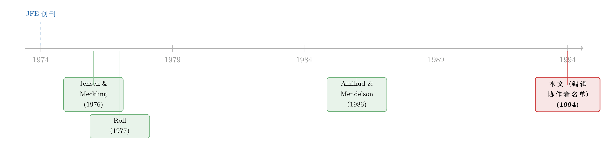

近百个名字，撑起两卷顶刊：一张 1994 年的「评审账本」
本文读的是 《Editorial Collaborators, Volumes 35 and 36》(1994, Journal of Financial Economics)：它不是一篇论文，而是 JFE 第 35、36 两卷的「同行评审致谢名单」——三页纸、近百个名字、没有一个数字。可正是这张看似最无足轻重的名单，把现代金融学赖以运转的那套「免费劳动」摆到了明面上：一门学科的质量控制，是靠一群不收钱的人，替彼此审稿审出来的。
1 一页没有摘要的「论文」
设想你翻开 1994 年那本 Journal of Financial Economics 第 36 卷，一路读过去，读到第 385 页，忽然停住了。
这一页没有摘要，没有引言，没有回归表，甚至没有一句完整的话。它只有一串名字，两列排开，从 YAKOV AMIHUD 一直排到 ERIK SIRRI，每个名字底下缀着一所大学：纽约大学、麻省理工、芝加哥、哈佛、斯坦福……整整三页，到第 387 页戛然而止。标题倒是朴素得可疑——「Editorial Collaborators, Volumes 35 and 36」（第 35、36 卷的编辑协作者）。
这是什么？为什么一本以严谨著称的顶级期刊，要郑重其事地把一串名字印进正刊、给它编上页码（pp. 385–387）、还配上一个 DOI 式的编号？
这是一个值得停下来想一想的问题。因为它恰恰戳中了一件我们平时熟视无睹的事：一篇论文能登上 JFE，靠的远不止作者自己。 在作者和读者之间，站着一群隐形的人——审稿人 (referee)。而这张名单，就是期刊给这群隐形者开出的、唯一的一张「收据」。
2 同行评议：一门学科的「免费质检线」
先把概念讲清楚。
现代学术出版的核心机制，叫 同行评议 (peer review)。一篇稿子投到 JFE，主编不会自己拍板，而是把它寄给两三位匿名的同行专家。这些专家逐字读完，挑出识别策略的漏洞、数据的瑕疵、推导的跳步，写成一份动辄四五页的评审报告 (referee report)，再判一个「拒稿／大修／小修」。作者据此反复修改，常常要熬上一两年、改三四轮。这套机制，就是学术质量控制的那条「质检线」。
接着，一个自然的问题是：这群审稿人，拿多少钱？
答案近乎荒诞——几乎不拿钱。 替 JFE 审一篇稿子，报酬通常是零，或者象征性的一点点。审稿人付出的，是自己最稀缺的资源：时间、注意力、以及多年训练出来的专业判断力。他们免费把这些交出去，替一篇可能根本不认识的同行的论文做嫁衣。
于是这张名单的性质就变了。它不是一份荣誉榜，而是一份劳动清单。我粗粗数了一遍：第 385 页约 30 个名字，386 页约 42 个，387 页约 25 个，两卷加起来近 97 位审稿人。这意味着，仅仅为了让这两卷书里的论文达到「可以发表」的标准，就有近百位学者，在 1992—1994 年间，无偿贡献了数以千计的工时。
（关于这套「免费运转」的机制，这个博客其实已经读过两张几乎一样的纸——可参见《撑起一本顶刊的，是三百个不收钱的人》与《一页致谢里的「隐形账本」：金融学界靠什么免费运转》。它们和本文是同一个故事的不同切片。）
3 为什么有人愿意做「赔本买卖」？
但真正关键的一步在于：为什么会有人愿意做这桩看上去稳赔不赚的买卖？
经济学家本该是最不相信「免费午餐」的人。同行评议在经济学上是一件极反直觉的事——它生产的是一种 公共品 (public good)：高质量的、可信的科学文献，谁都能读、谁都受益。而公共品的经典宿命，是 搭便车 (free riding)：既然别人审稿我也能读到好论文，那我何必自己费劲去审？按这个逻辑，同行评议本该早就崩溃。
可它没有。它靠的是一套不写在合同里的隐性契约，金融学家或许会称之为 礼物经济 (gift economy)：你今天免费替别人审稿，是因为你也指望明天有人免费替你审。整个学界靠一种延迟的、非货币的互惠，把这套体系撑了下来。它不是市场，更像一个心照不宣的「轮流值班表」。
而这张名单，就是值班表的存档。期刊把名字白纸黑字印出来，本身就是这套礼物经济里唯一的「货币」——声誉。你审了稿，期刊欠你一个公开的人情，于是把你的名字记上一笔。这是一种近乎仪式化的结算：用「被看见」来支付「被免费占用的时间」。
4 名单里的反转：审稿人，正是这个领域的造物主
读到这里，故事似乎已经完整了：一群无名英雄，免费撑起了一本顶刊。
但如果你真的逐个去看这些名字，反转就出现了——他们根本不是无名之辈。
YAKOV AMIHUD、HAIM MENDELSON：两个名字一前一后排在名单里，而「流动性溢价」这个整个市场微观结构领域的基石概念，正是出自他俩之手。JOEL HASBROUCK、MAUREEN O'HARA：微观结构的另外两位奠基者。RICHARD ROLL：那篇让一代人重新思考 CAPM 能不能被检验的「Roll 批判」的作者。ROBERT MERTON：三年后（1997）的诺奖得主。STEWART MYERS、JOSEF LAKONISHOK、JOSHUA LERNER、RAGHURAM RAJAN……这哪里是什么后勤名单，这分明是 1990 年代金融学的半幅星图。
这就是这张纸最耐人寻味的地方：给论文把关的人，自己就是在写下一代论文的人。 这门学科的质量控制，不是外包给某个独立机构，而是由领域内最顶尖的那一小撮人，彼此交叉审阅、互相挑刺、互相成全。它是一个高度自治、近乎封闭的「同行共同体」——既当运动员，又当裁判员。
于是名单的含义又翻了一层。它不只是一份劳动清单，也是一张权力地图：谁被主编信任、谁被请进这个圈子替学科守门，本身就标注了 1994 年金融学的中心与边缘。一个年轻学者的名字第一次出现在这样的名单上，往往是他被这个共同体正式「接纳」的隐秘信号。
（这门「谁说了算」的隐形政治，在另一张只有八个名字的编委名单里被读得更细——可参见《八个名字撑起的一页：从 2003 年 JFE 的编委名单里，读出一门学科的隐秘版图》。）
5 文献脉络：从「致谢」到「账本」
把这张纸放回它所在的脉络里，会看得更清楚。
这条「脉络」并不是某个研究问题的演进，而是一本期刊自身的制度史。Journal of Financial Economics 由 Michael Jensen 等人在 1974 年创立，从一开始就带着鲜明的「实证 + 契约」基因；两年后，Jensen 与 Meckling (1976) 那篇关于代理成本与所有权结构的奠基之作，就发表在它的版面上（关于这篇论文半个世纪后的回响，可参见《债务这副药，为什么不能全吃？——重读 Jensen 和 Meckling 五十年》）。Roll (1977) 的 CAPM 检验批判同样登在这里。

正是这样一本「自带方法论自觉」的期刊，会格外在意把支撑它运转的那套隐形劳动显性化——于是有了一年一度、按卷结算的「编辑协作者」名单。本文这张 1994 年的名单，并不是孤例：它有前序，也有后续。紧接着的第 37—39 卷，就有了另一张几乎同构的名单（这个博客也读过——见《editorial-collaborators-volumes-37-38-and-39》）。把这些名单按年排开，你看到的其实是一门学科人力基础设施的连续快照：谁在守门、圈子如何缓慢扩张、新名字何时挤进来、老名字何时淡出。
所以，这页纸真正的价值，不在它「说了什么」，而在它「记录了什么」——它是金融学少有的、关于自身知识生产过程的一份原始账本。
评论与延伸（Q&A + 研究方向）
(a) 几个可能的疑问
Q：这根本不是一篇论文，凭什么值得专门读？
因为它是「数据」，而不是「论点」。一篇致谢名单本身没有结论，但把几十年的此类名单连起来，就是一份现成的、跨越数十年的审稿人面板数据——它客观记录了谁在何时进入了学科的核心评审圈。对研究科学社会学、学术网络与知识生产的人来说，这种「无意中留下的档案」往往比刻意写就的论文更诚实。
Q：「编辑协作者」就等于「审稿人」吗？会不会名单里混了别的角色？
在 JFE 的语境里，「Editorial Collaborators」基本就是该期内为期刊审过稿的外部专家（associate editors 通常另列于编委页）。它和正文里偶尔出现的「致谢某某人的评论」不同：后者是作者私人的感谢，前者是期刊以机构名义做的、按卷结算的公开记录。两者的「结算主体」不一样。
Q：同行评议是公共品，按理会被搭便车搞垮，为什么现实中没垮？
因为它不是纯粹的一次性博弈，而是嵌在一个长期、重复、且高度看重声誉的小共同体里。学界用「延迟互惠 + 公开记名」替代了货币支付：你今天审稿换来的不是钱，而是主编的信任、同行的人情、以及一个会跟着你一辈子的学术声誉。在这样一个小圈子里，长期不合作的代价（被边缘化）远高于一次搭便车的收益。
Q：把名单印出来，是「致谢」还是「考核」？
两者都是，而且这正是它的精妙之处。对审稿人，它是一种零成本的声誉补偿（致谢）；对整个共同体，它又是一份公开的「谁在干活」的清单，隐含着一种温和的同侪压力（考核）。用最低的成本，同时完成了激励与监督。
Q：名单里全是顶尖学者，这说明评审很可靠，还是恰恰说明圈子很封闭？
这是一枚硬币的两面。好的一面：把关的是真正懂行的人，质量有保证。可疑的一面：当裁判和运动员高度重合，就可能产生「范式锁定」——主流方法更容易被认可，非主流的、挑战既有共识的工作更容易被同一批人按下。名单的同质性，既是质量的来源，也可能是创新的隐性税。
Q：这种「免费劳动」模式，今天还撑得住吗？
正面临压力。投稿量暴涨、合格审稿人时间被严重稀释、而声誉这种「货币」的边际激励在递减（资深学者审一篇稿子换来的名声越来越不值钱）。近年关于「审稿人罢工」「该不该给审稿付费」的讨论，本质上就是这套礼物经济在需求侧超载后的应力反应。这张 1994 年的名单，记录的是这套体系还运转得相当顺畅的年代。
(b) 几个可能的研究问题与提案
1. 审稿圈的「网络拓扑」与学科创新 【经济故事】把数十年的编辑协作者名单数字化，构造一张「期刊—审稿人—年份」的二部网络，度量评审圈的集中度、周转率与新人进入率。核心假说：评审圈越封闭、周转越慢的时期，期刊发表的方法越同质、突破性工作越少。这能把「同行评议是否抑制创新」从猜想变成可检验的命题。 【可行性】中。数据来源现成（各卷的致谢页 OCR 即可），但「创新性」的度量需要借助论文的引文结构或文本新颖度指标，且因果识别困难——只能先做扎实的描述性网络分析。
2. 名字第一次出现的「接纳效应」 【经济故事】一个青年学者的名字首次进入顶刊审稿名单，是否是其职业轨迹的转折点？可用事件研究 (event study) 的思路，比较「首次入选审稿名单」前后该学者的发文、引用与晋升轨迹。机制是：被请进核心评审圈本身是一种信息，向劳动力市场传递了「此人已被共同体认可」的信号。 【可行性】高。审稿名单 + 个人简历/Google Scholar 数据都可得；难点在控制「能力本就在上升」的内生性，需要用匹配或断点式设计找一批「差一点入选」的对照组。
3. 把「评审劳动」当成一种隐形成本，给学术声誉定价 【经济故事】借鉴信用市场里给「无偿担保」「关系」定价的思路（可类比《一笔贷款被卖掉之前，借款人先讨回了 20 个基点》那种「把隐性人情翻译成基点」的做法），尝试估算一次顶刊审稿对审稿人的「声誉回报」折算成多少等价货币。识别策略：利用某些期刊曾试点「付费审稿」或「公开审稿人评分」的自然实验，对比记名与匿名、付费与免费下的审稿质量与速度。 【可行性】中偏低。理想实验稀缺，多数期刊数据不公开；但近年个别期刊的付费审稿试点提供了难得的窗口，值得盯着。
4. 评审共同体的「全球化」时间线 【经济故事】早期 JFE 的审稿人几乎清一色北美名校（本文这张名单里，非美国机构屈指可数：UBC、Waterloo、Auckland）。把这种地理构成沿时间展开，可以量出金融学评审权力「去美国中心化」的速度，并与各国金融学科的崛起、跨国合著的兴起对照。 【可行性】高。纯描述性工作，数据完全公开，唯一的工作量在 OCR 与机构归类；适合作为一篇扎实的学科计量（science-of-science）小品。
我自己的判断。
作为「论文」，本文当然没有任何贡献可言——它没有问题、没有数据、没有结论。但作为史料，它的价值恰恰被它的朴素掩盖了。它是金融学这门学科，在不经意间替自己留下的一页「劳动账本」：近百个名字，证明了一件我们平时拒绝承认的事——支撑顶级期刊「客观、严谨」光环的，是一套完全非市场化的、靠声誉和互惠勉力维持的免费劳动体系。
对识别（如果硬要谈识别的话）的担忧只有一个：名单本身会沉默地骗人。 它只告诉你「谁审了稿」，不告诉你「谁拒了邀请、谁审得敷衍、谁的报告其实决定了生死」。把这张名单当成「评审贡献」的代理变量去做研究，会系统性地高估记名者的真实投入、并完全漏掉那些谢绝邀请的人。任何用这类数据的工作，都必须诚实地面对这层选择性。
后续我最想看到的，是有人真的把几十年的此类名单全部数字化，做成一份公开的「金融学评审面板」——然后用它去回答那个最尖锐的问题：当裁判和运动员是同一批人，这门学科究竟是因此更可靠，还是因此更难自我颠覆？ 这张 1994 年的纸，提了一个它自己永远无法回答的好问题。
参考文献
Editorial Collaborators, Volumes 35 and 36 (1994). Journal of Financial Economics 36(3), 385–387.
Jensen, M. C., & Meckling, W. H. (1976). Theory of the firm: Managerial behavior, agency costs and ownership structure. Journal of Financial Economics 3(4), 305–360.
Roll, R. (1977). A critique of the asset pricing theory's tests Part I: On past and potential testability of the theory. Journal of Financial Economics 4(2), 129–176.
Amihud, Y., & Mendelson, H. (1986). Asset pricing and the bid-ask spread. Journal of Financial Economics 17(2), 223–249.